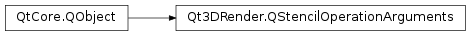

Qt3DRender.QStencilOperationArguments¶
Synopsis¶
Functions¶
- def
allTestsPassOperation() - def
depthTestFailureOperation() - def
faceMode() - def
stencilTestFailureOperation()
Slots¶
- def
setAllTestsPassOperation(operation) - def
setDepthTestFailureOperation(operation) - def
setStencilTestFailureOperation(operation)
Signals¶
- def
allTestsPassOperationChanged(stencilDepthPass) - def
depthTestFailureOperationChanged(depthFail) - def
faceModeChanged(faceMode) - def
stencilTestFailureOperationChanged(stencilFail)
Detailed Description¶
The
QStencilOperationArgumentsclass sets the actions to be taken when stencil and depth tests fail.The
Qt3DRender.QStencilOperationArgumentsclass specifies the arguments for the stencil operations.See also
Qt3DRender.QStencilOperation
-
PySide2.Qt3DRender.Qt3DRender.QStencilOperationArguments.FaceMode¶ This enumeration holds the values for stencil operation argument face modes
Constant Description Qt3DRender.QStencilOperationArguments.Front Arguments are applied to front-facing polygons. Qt3DRender.QStencilOperationArguments.Back Arguments are applied to back-facing polygons. Qt3DRender.QStencilOperationArguments.FrontAndBack Arguments are applied to both front- and back-facing polygons.
-
PySide2.Qt3DRender.Qt3DRender.QStencilOperationArguments.Operation¶ This enumeration holds the values for stencil operation.
Constant Description Qt3DRender.QStencilOperationArguments.Zero Set stencil value to zero. Qt3DRender.QStencilOperationArguments.Keep Keep current stencil value. Qt3DRender.QStencilOperationArguments.Replace Replace with the masked fragment stencil value. Qt3DRender.QStencilOperationArguments.Increment Increment current value with saturation. Qt3DRender.QStencilOperationArguments.Decrement Decrement current value with saturation. Qt3DRender.QStencilOperationArguments.IncrementWrap Increment current value with wrap. Qt3DRender.QStencilOperationArguments.DecrementWrap Decrement current value with wrap. Qt3DRender.QStencilOperationArguments.Invert Invert the current value.
-
PySide2.Qt3DRender.Qt3DRender.QStencilOperationArguments.allTestsPassOperation()¶ Return type: PySide2.Qt3DRender.Qt3DRender::QStencilOperationArguments.OperationSee also
PySide2.Qt3DRender.Qt3DRender::QStencilOperationArguments.setAllTestsPassOperation()
-
PySide2.Qt3DRender.Qt3DRender.QStencilOperationArguments.allTestsPassOperationChanged(stencilDepthPass)¶ Parameters: stencilDepthPass – PySide2.Qt3DRender.Qt3DRender::QStencilOperationArguments.Operation
-
PySide2.Qt3DRender.Qt3DRender.QStencilOperationArguments.depthTestFailureOperation()¶ Return type: PySide2.Qt3DRender.Qt3DRender::QStencilOperationArguments.OperationSee also
PySide2.Qt3DRender.Qt3DRender::QStencilOperationArguments.setDepthTestFailureOperation()
-
PySide2.Qt3DRender.Qt3DRender.QStencilOperationArguments.depthTestFailureOperationChanged(depthFail)¶ Parameters: depthFail – PySide2.Qt3DRender.Qt3DRender::QStencilOperationArguments.Operation
-
PySide2.Qt3DRender.Qt3DRender.QStencilOperationArguments.faceMode()¶ Return type: PySide2.Qt3DRender.Qt3DRender::QStencilOperationArguments.FaceMode
-
PySide2.Qt3DRender.Qt3DRender.QStencilOperationArguments.faceModeChanged(faceMode)¶ Parameters: faceMode – PySide2.Qt3DRender.Qt3DRender::QStencilOperationArguments.FaceMode
-
PySide2.Qt3DRender.Qt3DRender.QStencilOperationArguments.setAllTestsPassOperation(operation)¶ Parameters: operation – PySide2.Qt3DRender.Qt3DRender::QStencilOperationArguments.OperationSee also
PySide2.Qt3DRender.Qt3DRender::QStencilOperationArguments.allTestsPassOperation()
-
PySide2.Qt3DRender.Qt3DRender.QStencilOperationArguments.setDepthTestFailureOperation(operation)¶ Parameters: operation – PySide2.Qt3DRender.Qt3DRender::QStencilOperationArguments.OperationSee also
PySide2.Qt3DRender.Qt3DRender::QStencilOperationArguments.depthTestFailureOperation()
-
PySide2.Qt3DRender.Qt3DRender.QStencilOperationArguments.setStencilTestFailureOperation(operation)¶ Parameters: operation – PySide2.Qt3DRender.Qt3DRender::QStencilOperationArguments.OperationSee also
PySide2.Qt3DRender.Qt3DRender::QStencilOperationArguments.stencilTestFailureOperation()
-
PySide2.Qt3DRender.Qt3DRender.QStencilOperationArguments.stencilTestFailureOperation()¶ Return type: PySide2.Qt3DRender.Qt3DRender::QStencilOperationArguments.OperationSee also
PySide2.Qt3DRender.Qt3DRender::QStencilOperationArguments.setStencilTestFailureOperation()
-
PySide2.Qt3DRender.Qt3DRender.QStencilOperationArguments.stencilTestFailureOperationChanged(stencilFail)¶ Parameters: stencilFail – PySide2.Qt3DRender.Qt3DRender::QStencilOperationArguments.Operation
© 2018 The Qt Company Ltd. Documentation contributions included herein are the copyrights of their respective owners. The documentation provided herein is licensed under the terms of the GNU Free Documentation License version 1.3 as published by the Free Software Foundation. Qt and respective logos are trademarks of The Qt Company Ltd. in Finland and/or other countries worldwide. All other trademarks are property of their respective owners.